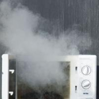
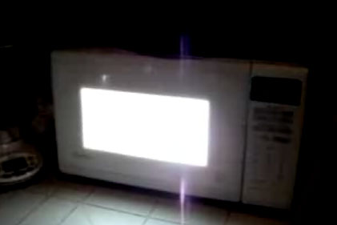

Microwave's Story
Microwave appeared in the kitchen one day. None of the other appliances even saw him arrive. Though Microwave arrived so spontaneously, he remained unused for a long period of time. The other appliances often wondered what his purpose was. When he was finally used, the others were astonished. He was able to cook food in a very short period of time. The appliance who noticed this the most was Oven.
Oven quickly became jealous of Microwave. Little did Oven know, though, that Microwave was also jealous of him. This was due to Oven's status in the kitchen and his proximity to the other appliances. Microwave is often treated badly, having potatoes and such explode inside him. Because of this, he has suffered deep emotional scarring. He often shouts at and mocks Lamp. It is because of this that the other appliances have a strong disdain for him.
 
Having potatoes and such explode inside him!